ドネイト Donating
概要
ドネイトはBackToBackを維持したままTSDを狙う技術です．
TSDを作る場所，そのTSDによって消去されるラインをイメージすることが大事です．
関連項目 欄干
最も基本的なドネイトは，直列穴をミノで塞ぎ，2ライン分埋めるものです．
以下の様なやり方で出来ます．
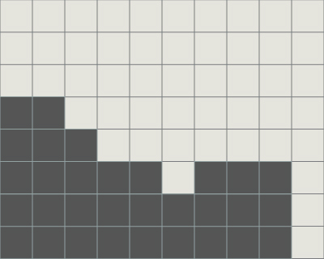
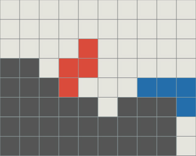
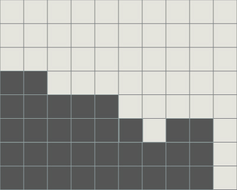
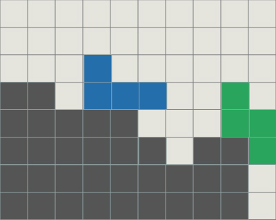
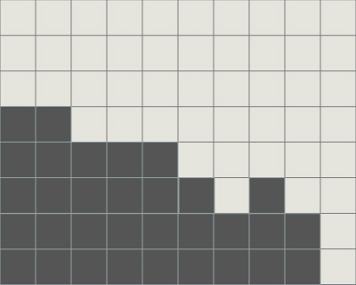
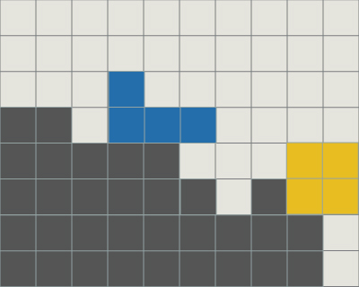
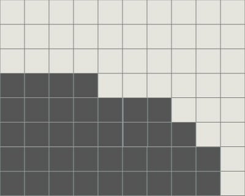
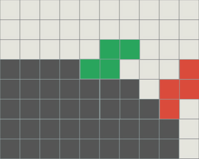
また，穴を塞ぐ形でミノを置いたとしても問題はありません．
TSDの2ラインのイメージが大事です．
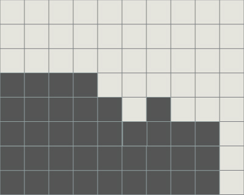
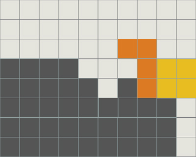
 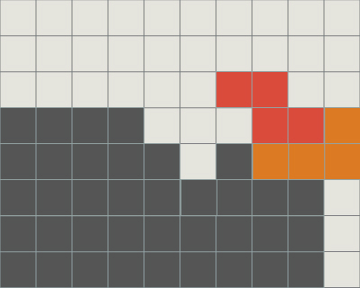
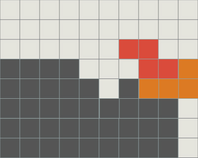
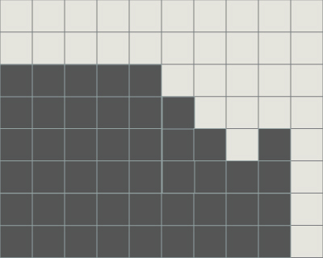
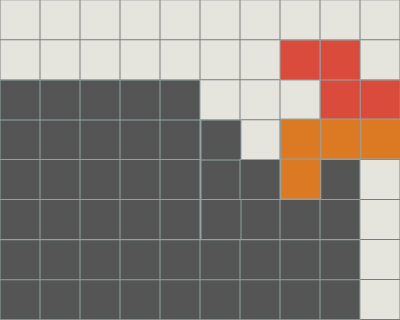
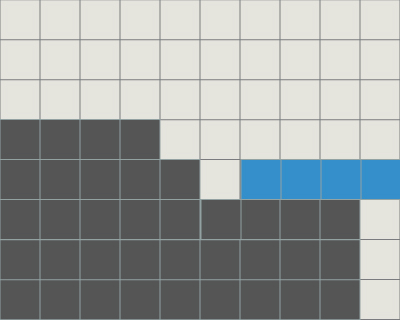
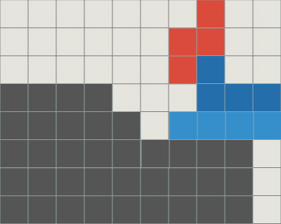
 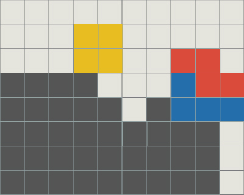
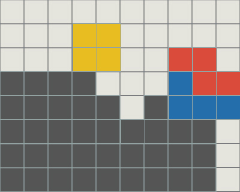
これは，下穴の位置やTSDの場所によるものではありません．
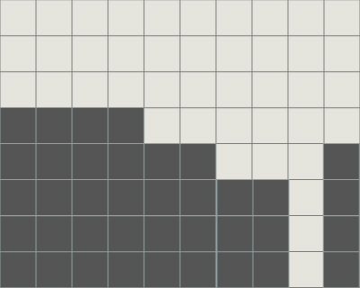
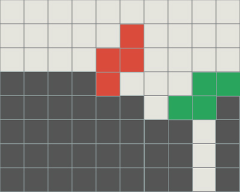
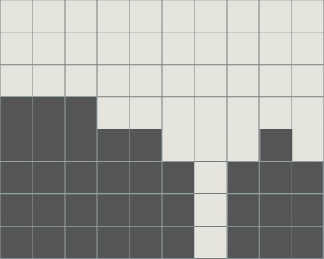
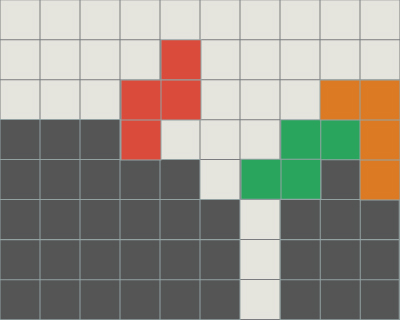
ドネイトはさまざまなパターンが考えられます．
瞬時に判断することは難しいかもしれませんが，どれも考え方は同じです．
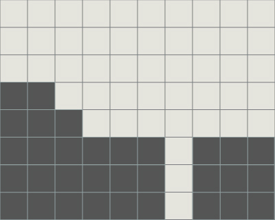
TSDの地形を考えます．
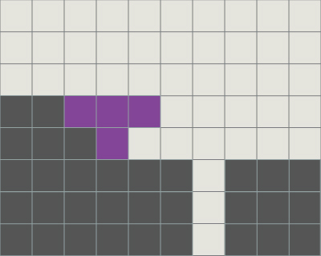
そのTSDによって消去されるラインを埋めます．その際に下穴の上は積み過ぎてはいけません．
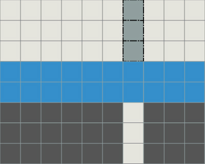
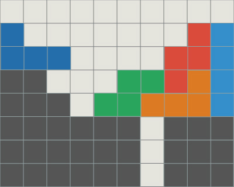
また，TSSとする方法もあります．
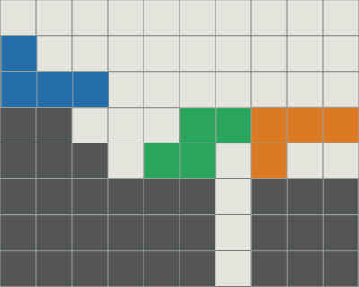